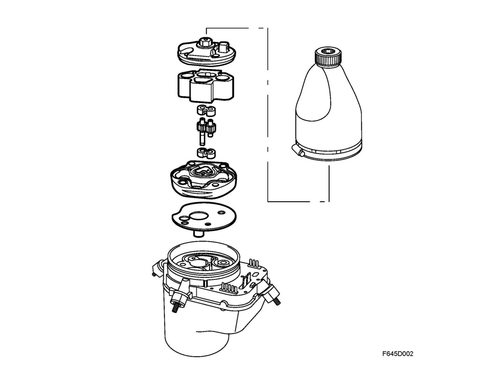
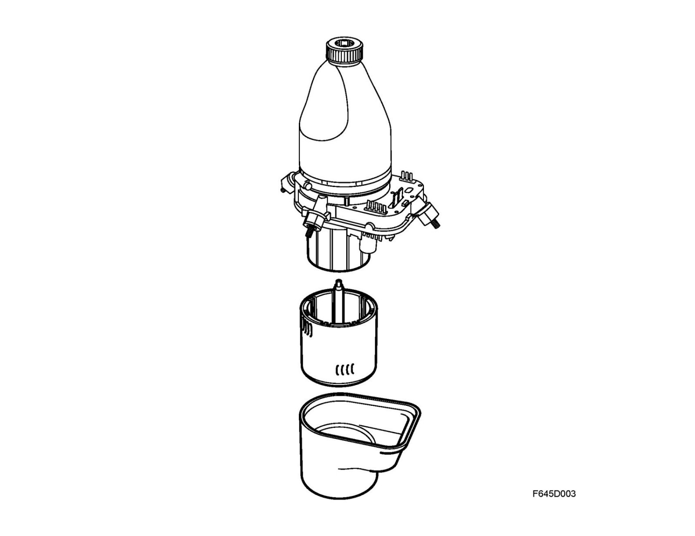
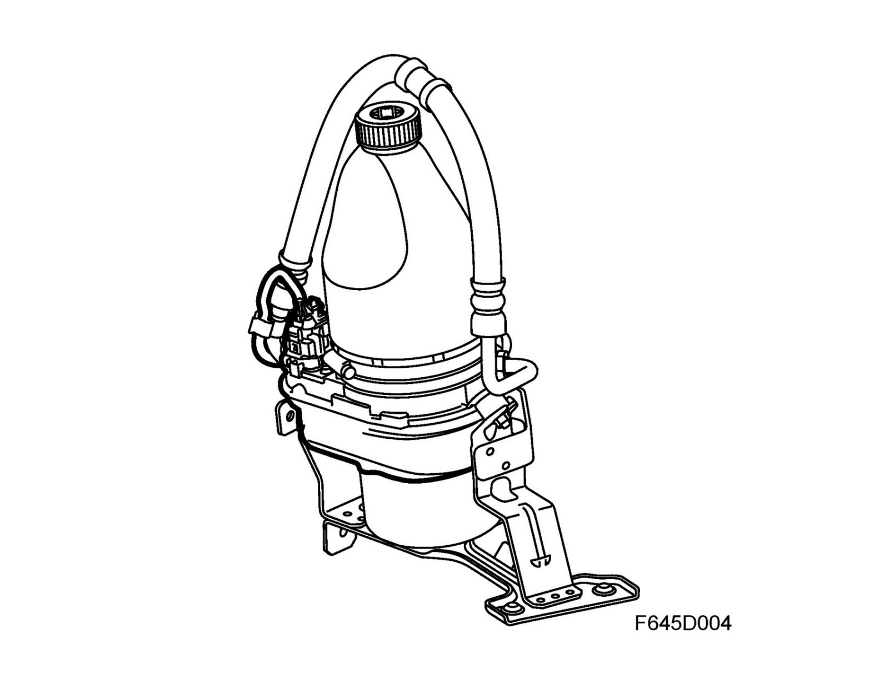
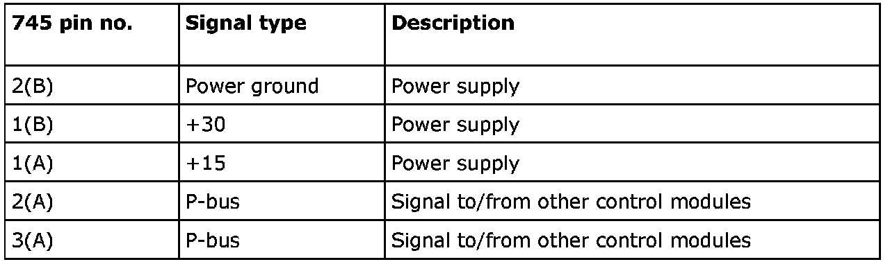
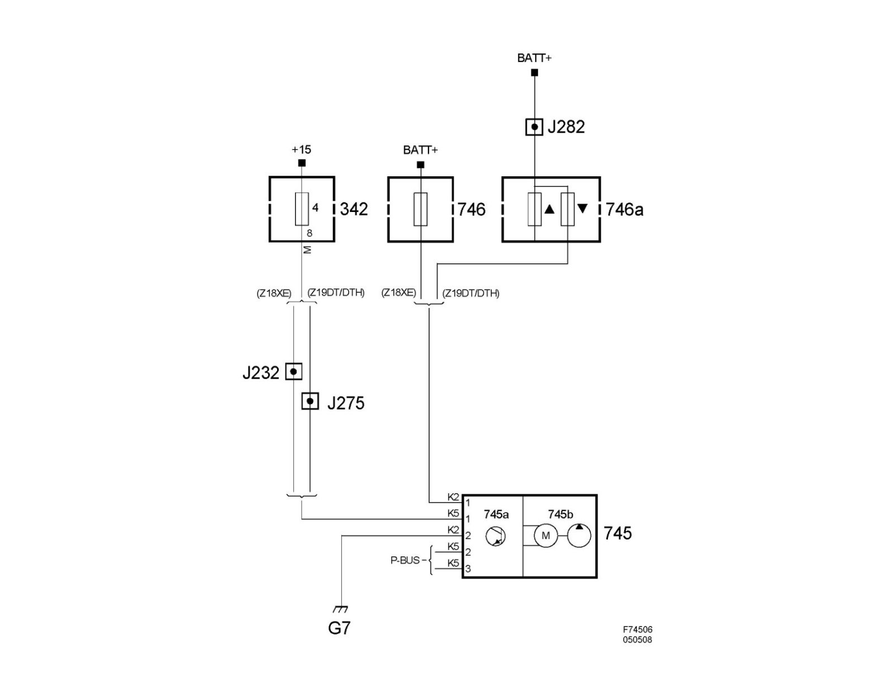

Power Steering System Unit (745)
Power steering system unit (745)Location
Power steering system unit (745)
Main task
To supply servo oil to the power steering gear for generating power assistance to the car's steering system.
Type
The power steering system unit (745) consists of a pump unit with oil reservoir, an electric motor and a control module. All are mounted as a complete unit on the steering gear.
Pump unit
Gear pump driven by a DC motor. A temperature sensor is connected to the EHPS control module and measures the oil temperature continuously.

Electric motor
Brushless DC motor, powered directly and grounded by the integrated EHPS control module.

EHPS control module
Receives information from the P-bus, steering speed sensor, temperature sensor for power steering fluid and the circuit board. It calculates and ensures that steering force corresponds to vehicle speed and steering speed. It has a microprocessor - see Control module, general description. Cannot be programmed with SPS (Service Program System).

Connection

